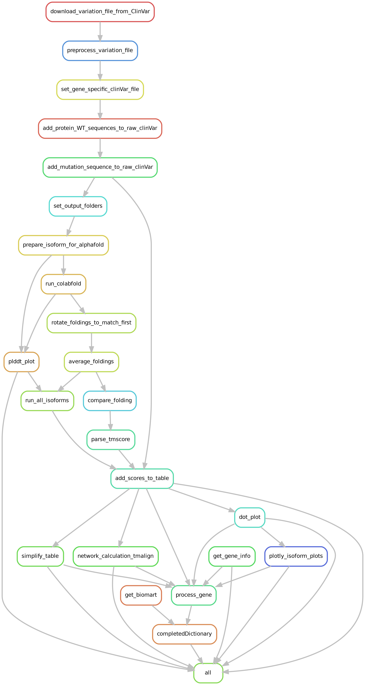

Methods
The protein foldings were run using local collabfold. on my laptop (using CPU) with relaxation. To reduce noise, many foldings are made for each mutation (can be edited in the config file), those foldings then are rotated to match each other and averaged.
Scores are calculated using TMalign to compare them against the canonical (unmutated) ptotein and against all other mutations.
The entire analysis is performed using snakemake.
The snakefile is designed to arbitrarily work with any gene name. As long as it is in the ClinVar database. All that is needed is to add the gene name to the config file.
Thank you.